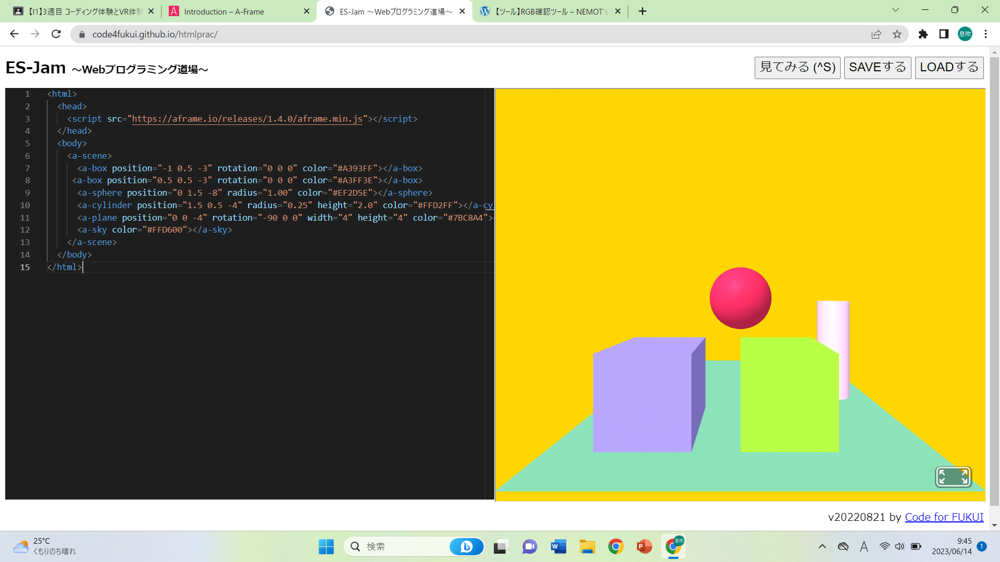
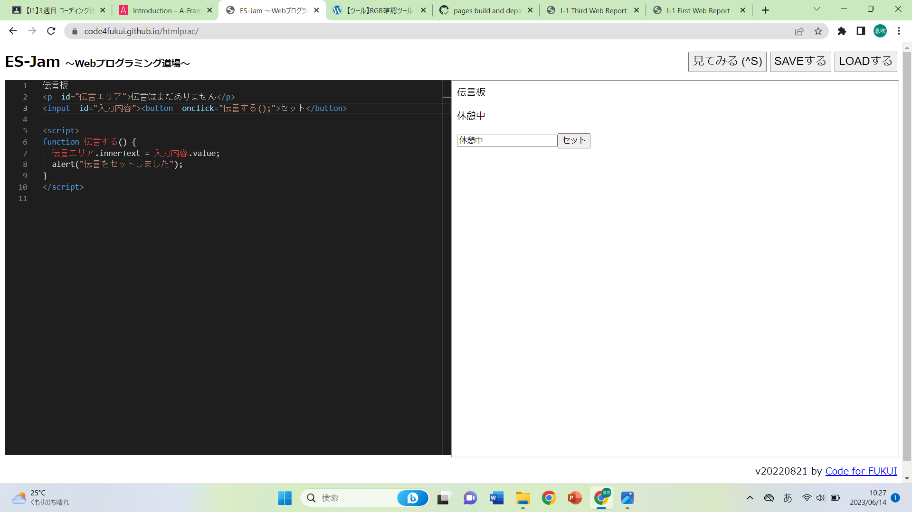

第3週目
3-1 JavaScript体験：VR空間を作る

自作した３次元空間
1.内容
Webプログラミング道場で仮想空間を作成した。A-Frameのサイトからテンプレートをコピーしてきて、Webプログラミング道場に貼り付けることで3次元モデルを作成した。また、それを書き換えることでオリジナルのモデルを作った。
2.感想
この体験を通してJavaScriptについて少し理解することができた。プログラミング言語を覚えるのはとても難しそうだと思うが、覚えることで色々なプログラムを作ることができるので少し勉強してみようと思った。
3-2 JavaScript体験：伝言プログラムを作る

伝言板
1.内容
Webプログラミング道場で伝言板を作成した。伝言がセットされるとその伝言が表示されるようにプログラムした。また、伝言がセットされていないときには「伝言はまだありません」と表示されるようにプログラムした。
2.感想
この体験では自分でプログラミング言語を入力していくため、1つ1つのプログラミング言語の意味を知ることができた。このプログラミングは企業のホームページなどでよく見るものなのでとても社会で活躍しているものだと思う。そのため、自分が起業するときのためにもしっかりと覚えておきたいと思う。
3-3 JavaScriptプログラムの３次元空間の体験
1.内容
VRゴーグルをつけて仮想空間に入り、球を飛ばしたり、空間内にある立体を自由に動かしたりした。また、空間内で移動した。
2.感想
VRゴーグルをつけることでその場にいるような感覚になり、実際に球に当たっているように感じた。球の跳ね返り方がリアルなので驚いた。また、立体にも球が跳ね返るのはすごいと思った。